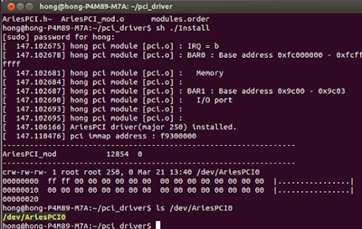
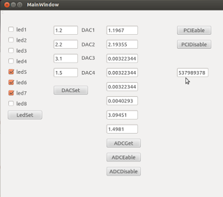

โปรเจค PCI card ตอนที่ 4 เขียน Driver และ Application
Overview
หลังจากที่เราออกแบบฝั่ง FPGA เสร็จสิ้นแล้วในตอนที่ 3 ในตอนนี้เราจะมาพัฒนาฝั่ง Software กันบ้าง ซึ่งจะประกอบไปด้วย 2 ส่วนหลักๆ คือ Driver สำหรับติดต่อกับ Hardware และ Application สำหรับให้ผู้ใช้งานสามารถควบคุม Card ของเราได้
การจะให้ PC คุยกับ PCI card ให้รู้เรื่องนั้น มีสิ่งสำคัญแค่ 2 อย่างเท่านั้นคือ
- Vendor ID, Device ID: ตัวนี้จะเป็นตัวบอกให้ระบบปฏิบัติการรู้ว่า จะต้องใช้ Driver ตัวไหนสำหรับ Hardware ชิ้นนี้ สำหรับ Card ของเราได้กำหนดค่าเป็น
Vendor ID = 0x1172และDevice ID = 0x0004 - Memory map: เป็นข้อกำหนดที่เราสร้างขึ้นเองเพื่อบอกว่าถ้าจะสั่งงานอะไร ต้องส่ง data ไปที่ address ไหน ซึ่งเป็น Memory map เดียวกันกับที่เราออกแบบไว้ในฝั่ง FPGA
| Offset address | Function |
|---|---|
| 0x0000_0000 | Digital I/O CH1 ~ Digital I/O CH16 |
| 0x0000_0004 | Digital I/O CH1 ~ Digital I/O CH16 Mode setting (0: Input, 1: Output) |
| 0x0000_0100 ~ 0x0000_011C | ADC CH1 ~ ADC CH8 |
| 0x0000_0200 ~ 0x0000_020C | DAC CH1 ~ DAC CH4 |
| 0x0000_0210 | DAC Output enable |
| 0x0000_0300 | LED |
| 0x0000_0400 | FPGA version |
ขั้นตอน
1. Driver Development
เราจะพัฒนา Driver ของเราในรูปแบบของ Linux Kernel Module (.ko) ซึ่งเป็น Character Device Driver โดยมีไฟล์หลักๆ คือ AriesPCI.c และ AriesPCI.h
การลงทะเบียน Driver
สิ่งแรกที่ Driver ต้องทำคือการบอกให้ Kernel รู้จักตัวเอง และระบุว่าจะจัดการกับ Hardware ตัวไหนผ่าน pci_get_device โดยใช้ Vendor ID และ Device ID ที่เรากำหนดไว้
// AriesPCI.c
static int pci_init(void)
{
// ...
device = pci_get_device( 0x1172, 0x0004, device );
if ( device == NULL ){
printk("AriesPCI device == NULL");
return -1;
}
// ...
}
จากนั้นเราจะทำการจองพื้นที่หน่วยความจำของ PCI Card (Memory-Mapped I/O) เข้ามาใน Address Space ของ Kernel ด้วย pci_iomap เพื่อให้ Kernel สามารถเขียนหรืออ่านข้อมูลไปยัง Card ของเราได้โดยตรง
// AriesPCI.c
ioaddr = pci_iomap(device, 0, pci_resource_len(device,0));
if (!ioaddr) {
dev_err(&device->dev, "cannot map MMIO, aborting\n");
return -EIO;
}
File Operations
หัวใจสำคัญของ Character Driver คือ file_operations struct ซึ่งเป็นการกำหนดว่าเมื่อ Application ทำการ open, read, write หรือ ioctl บน device file (/dev/AriesPCI0) จะให้ไปเรียกฟังก์ชันไหนใน Driver ของเรา
// AriesPCI.c
struct file_operations AriesPCI_fops = {
.owner = THIS_MODULE,
.open = AriesPCI_open,
.release = AriesPCI_close,
.read = AriesPCI_read,
.write = AriesPCI_write,
.llseek = AriesPCI_llseek,
.unlocked_ioctl = AriesPCI_ioctl,
};
AriesPCI_read/AriesPCI_write: ทำหน้าที่อ่านและเขียนข้อมูลขนาด 32-bit ไปยัง address ที่กำหนดผ่านllseekAriesPCI_llseek: ทำหน้าที่ตั้งค่า offset address ที่ต้องการจะอ่านหรือเขียนAriesPCI_ioctl: เป็นช่องทางพิเศษที่เราสร้างขึ้นมาเองเพื่อส่งคำสั่งเฉพาะต่างๆ ไปยัง Driver ทำให้ฝั่ง Application เขียนโค้ดได้ง่ายขึ้น ไม่ต้องจัดการเรื่อง address เองทั้งหมด
IOCTL Commands
เราได้กำหนดคำสั่ง ioctl ต่างๆ ไว้ใน AriesPCI.h เพื่อให้ Application เรียกใช้งานได้สะดวก
// AriesPCI.h
#define IOCTL_READ_LED_BY_MEM 0x0
#define IOCTL_WRITE_LED_BY_MEM 0x1
#define IOCTL_DAC1_WRITE 0x20
// ... (DAC, ADC commands)
#define IOCTL_FPGA_VER_READ 0x10
#define IOCTL_DIO_MODE_WRITE 0x11
#define IOCTL_DIO_WRITE 0x12
#define IOCTL_DIO_READ 0x13
และใน AriesPCI.c จะมี switch statement เพื่อจัดการกับ command เหล่านี้
// AriesPCI.c
long AriesPCI_ioctl(struct file *filp, unsigned int cmd, unsigned long arg)
{
unsigned int data32 = 0;
switch(cmd){
case IOCTL_FPGA_VER_READ :
data32 = ioread32(ioaddr + FPGA_VER_BASE);
if (copy_to_user((int __user *)arg, &data32, sizeof(data32)) ) {
return -EFAULT;
}
return 0;
case IOCTL_DIO_WRITE :
if (copy_from_user(&data32,(int __user *)arg,sizeof(data32))) {
return -EFAULT;
}
iowrite32(data32, ioaddr + DIO_BASE);
return 0;
// ... other cases
}
return 0;
}
การคอมไพล์และติดตั้ง Driver
เมื่อเขียนโค้ดเสร็จแล้ว เราจะต้องคอมไพล์ Driver ซึ่งจะได้ไฟล์ AriesPCI.ko ออกมา จากนั้นใช้คำสั่ง insmod เพื่อติดตั้ง Driver เข้าไปใน Kernel และ chmod เพื่อให้ Application ทั่วไปสามารถเข้าถึงได้
sudo insmod AriesPCI.ko
sudo chmod 666 /dev/AriesPCI0

2. Userspace Application
เมื่อ Driver พร้อมใช้งานแล้ว เราสามารถพัฒนา Application ในฝั่ง Userspace เพื่อติดต่อกับ PCI Card ของเราได้ โดยการทำงานทั้งหมดจะผ่าน Device file ที่ชื่อว่า /dev/AriesPCI0
Library สำหรับ Debug
เพื่อความสะดวกในการทดสอบและ Debug เราได้สร้าง Library ง่ายๆ (myLib.c) ที่ห่อหุ้มการเรียกใช้ system call open, lseek, read, write ไว้ ทำให้เราสามารถอ่านเขียน Register บน Card ได้ง่ายๆ
// myLib.c
int reg_write(unsigned int addr, int data)
{
int fh = open("/dev/AriesPCI0", O_RDWR);
if(fh < 0){
printf("Cannot open \n");
return 1;
}
char buffer[4];
// ... pack data into buffer ...
lseek(fh, addr, SEEK_SET);
write(fh, buffer, 4);
close(fh);
return 0;
}
int reg_read(unsigned int addr)
{
int fh = open("/dev/AriesPCI0", O_RDONLY);
if(fh < 0){
printf("Cannot open \n");
return 1;
}
char buffer[4];
lseek(fh, addr, SEEK_SET);
read(fh, buffer, 4);
close(fh);
// ... unpack data from buffer ...
return (data);
}
3. Sample GUI Application
เราสามารถสร้าง Application แบบ GUI ด้วย Qt (mainwindow.cpp) ซึ่งเบื้องหลังก็คือการเรียกใช้ open, read, write ไปยัง /dev/AriesPCI0 เหมือนเดิม
ตัวอย่าง: การอ่าน FPGA Version
// mainwindow.cpp
void MainWindow::on_PCIEable_clicked()
{
fh = open("/dev/AriesPCI0",O_RDWR);
// ... error handling ...
char buffer[4];
lseek(fh, FPGA_VER_BASE, SEEK_SET);
read(fh, buffer, 4);
// ... unpack data and display ...
unsigned int data = ...;
QString tempText = QString::number(data, 16);
ui->FPGA_Ver->setText(tempText);
}
ตัวอย่าง: การตั้งค่า DAC
เมื่อผู้ใช้กรอกค่าแรงดันไฟฟ้าที่ต้องการและกดปุ่ม DACSet โปรแกรมจะแปลงค่า float เป็น integer 12-bit แล้วเขียนไปยัง Address ของ DAC แต่ละ Channel
// mainwindow.cpp
void MainWindow::on_DACSet_clicked()
{
float val;
unsigned int data;
char buffer[4];
// DAC Channel 1
val = ui->DAC1->text().toFloat();
data = (unsigned int)((val/3.3)*4095);
// ... pack data to buffer ...
lseek(fh, DAC1_BASE, SEEK_SET);
write(fh, buffer, 4);
// ... (repeat for DAC2, DAC3, DAC4)
}
ตัวอย่าง: การอ่านค่า ADC
เมื่อกดปุ่ม ADCGet โปรแกรมจะอ่านค่าจาก Register ของ ADC แต่ละ Channel แล้วแปลงค่ากลับเป็นแรงดันไฟฟ้าเพื่อแสดงผล
// mainwindow.cpp
void MainWindow::on_ADCGet_clicked()
{
unsigned int data;
char buffer[4];
float val;
// ADC Channel 1
lseek(fh, ADC1_BASE, SEEK_SET);
read(fh, buffer, 4);
// ... unpack data from buffer ...
data = ...;
val = (((float)data/4095))*3.3;
ui->ADC1->setText(QString::number(val));
// ... (repeat for other ADC channels)
}
note
ตัวอย่าง code ทั้งหมดสามารถดาวน์โหลดได้ที่ https://github.com/wichayen/ariesboard